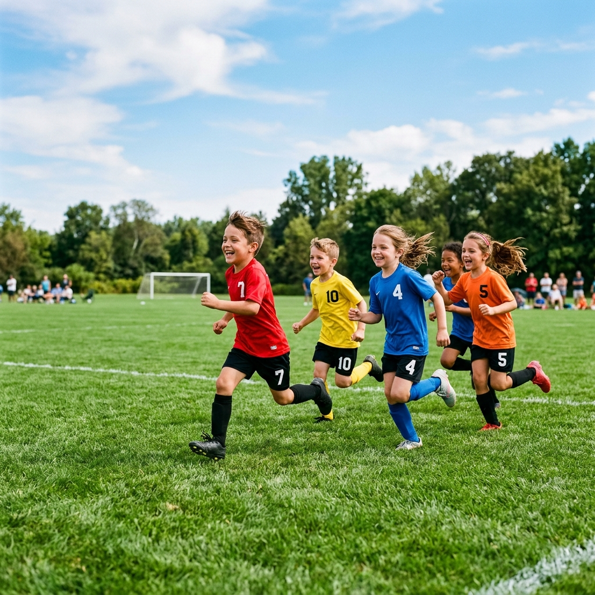
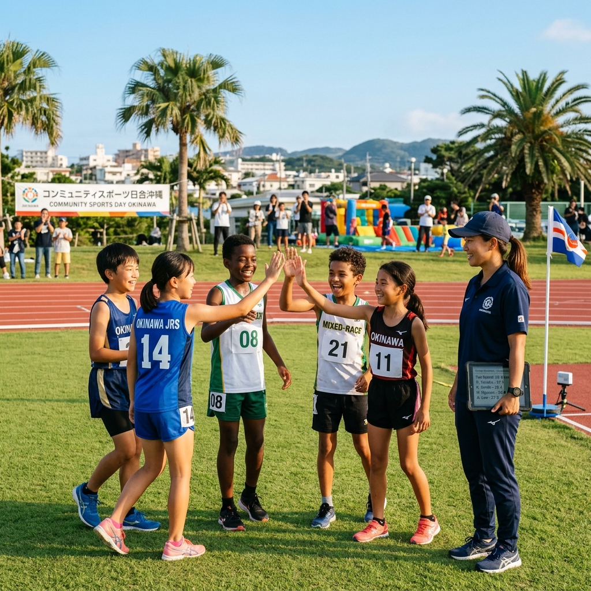

やりたい！と
思った瞬間に
挑戦できる場所を。
生まれた環境や家庭の経済状況に関わらず、すべての沖縄の子どもたちがスポーツを楽しみ、可能性を広げられる社会へ。
Awake Okinawaが主催する、子ども成長支援・AWAKE無料計測会。
AWAKE無料計測会に参加した子どもたち
活動を支えるパートナーチーム数
光電管によるタイム測定精度

すべての子どもに、
同じスタートラインを。
プロ水準のスプリント計測や科学的な分析を、経済的な理由で諦めてほしくない。
高精度の光電管計測や、走りの弱点を分析するF-Vプロファイルなどは、本来なら高額な機材費と専門知識が必要な「一部の恵まれた環境」だけの特権でした。私たちは、生まれた環境や経済状況のせいで、子どもたちが自分の「走る才能」や「可能性」に気付けない現状を変えたいと考えています。
「走る」というすべてのスポーツの原点において、誰もが等しく同じスタートラインに立ち、挑戦できること。個人ボランティア・地域コミュニティの協力のもと、費用一切不要で参加できる「AWAKE無料計測会」を毎月定期的に開催しています。
完全無料のオープン開催
毎月開催される合同AWAKE無料計測会は、参加費・機材測定費・分析シートの提供まですべて0円です。個人・チーム問わず誰でも参加できます。
科学的アプローチを全員に
無料であっても測定の質は一切落としません。プロ選手と同等の赤外線光電管レーザーと、成長期を科学する高度なデータ分析を提供します。

沖縄の子どもたちのために、私たちができること
専門の計測環境がほぼゼロの沖縄で、草の根から走りの測定環境を届ける
地域唯一の草の根スプリント支援
沖縄県内には、専門的にジュニア向けスプリント計測を行える業者がほぼいません。私たちは、ボランティアベースの軽快なフットワークでグラウンドへと出向き、科学的指導のインフラを無償で届ける唯一の存在です。
オンラインでタイム履歴を確認
測定したタイムデータは、専用のオンライン画面や測定シートでいつでも振り返ることが可能です。以前の自分と比べてどれだけ成長したかを可視化し、走るモチベーションを高めます。
怪我を防ぎ、可能性を最大化する
感や経験だけに頼るのではなく、成長期の骨の発育ステージの推定や、左右アジリティの非対称性の可視化などを通じて、無理な練習による怪我のリスクを未然に防ぎ、子どもたちの安全な成長を守ります。
参加方法
子どもたちの「やりたい！」をAWAKE無料計測会で応援します
合同AWAKE無料計測会
¥0 / 子ども・保護者・チーム
生まれた環境に関わらず、すべての沖縄の子どもたちに走りの測定と成長分析の機会を届けるための、完全無料プログラム。
- 月1回開催のAWAKE無料計測会へ何回でも無料参加
- 光電管を用いた正確な10m・30m測定
- 測定結果の簡易分析シート配布
- PHV成長期推定（簡易版）の提供
- 参加条件：公式Instagramのフォロワーであること
AWAKE無料計測会への参加・登録の流れ
フォームから参加申込
下記のお問い合わせフォーム（メール）よりお気軽にお申し込みください。次回の計測会日程や会場、空き状況をご案内いたします。
当日、会場へお越しいただく
専門スタッフが光電管測定機やアジリティのコーンを配置してセッティングしています。動きやすい服装・シューズでお越しください。
タイム計測・結果のご確認
10m走・30m走・アジリティなどを順番に測定します。測定データは簡易分析シートとしてお渡しし、お子さまの「現在地」がその場でわかります。
子どもたちの挑戦を、
一緒に支えていきませんか？
AWAKE無料計測会への参加申込（体験）や、本活動に賛同していただくスポンサー・パートナー協賛についてのご質問など、お気軽にお問い合わせください。参加ご希望の方は、下記のフォームよりお申し込みをお願いいたします。